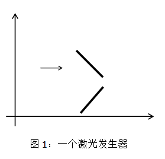
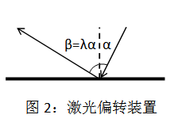

曾经发明了超能粒子炮·改的发明家SHTSC又公开了他的新发明：激光发生器--一种可以产生高能激光的神秘装置
。激光发生器从正上方看是一个无穷大的平面，里面由一个定向激光发射装置和若干个激光偏转装置组成。一个激
光发生器的示例如图所示，细箭头表示定向激光发射装置，粗线段表示激光偏转装置。

由定向激光发射装置发射出的激光可以看成是一条射线，如果遇到激光偏转装置就会发生偏转。奇特的是，SHTSC
所使用的激光偏转装置并非像传统的镜子那样遵循反射定律，而是对于每个激光偏转装置，有一个固定的偏转系数
λ，其出射角β与入射角α的关系为β=λα，并且能在这一过程中增强激光的能量。（入射角是入射光线和反射
平面法向量的夹角。）注意：1、偏转装置的两面均可偏转。2、如果激光平行射入偏转装置，则认为没有发生偏转
。3、如果不平行且照射到了端点则认为发生偏转。4、可能会偏转到另一面。

现在SHTSC希望你模拟他所设计的激光发生器的工作过程，来帮助他计算激光究竟被哪些激光偏转装置所偏转。